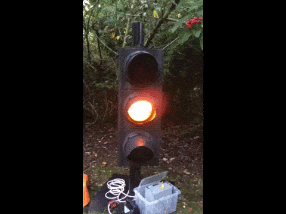
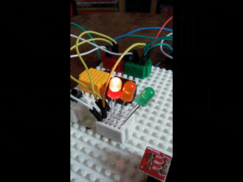

Now I have written a full, interrupt driven sketches for an arduino running some traffic signals. An extract is shown below:-
if ((_state == PHASE_GREEN) && (_phase_change == PHASE_CHANGE_TO_RED)) {
// On Green want Red
if (ran_min_green()) {
_state = PHASE_POST_GREEN;
_phase_change = PHASE_CHANGE_NONE;
_time_since_green_milliseconds = 0;
_time_on_current_state_milliseconds = 0;
if (debug_to_serial) {
Serial.println("Leaving Green");
}
}
}

However for this project, I do not need interrupts - so I using some simplicity on the timing. I also do not want the signals to cycle forever so I have added an END_SEQUENCE. Based upon the rectangle PCB With the following circuit, I put together a simple sketch. I borrowed the concept of using bits for each of the Red, Amber and Green from Paul Van Gelder
{kind=link}
#define RED 1
#define AMBER 2
#define GREEN 4
#define RED_FLASH 8
#define AMBER_FLASH 16
#define GREEN_FLASH 32
Then I can define each sequence as follows:-
sequence[SEQUENCE_TYPES][MAX_STEPS][2] =
{
{ // Normal Traffic RAG
{RED, 3},
{RED + AMBER, 2},
{GREEN, 7},
{AMBER, 2},
{RED, 3},
{END_SEQUENCE, 1},
}
With some neat boolean logic
flash = 255; // or ~255 (0)
leds = sequence[s][current_step][0]
digitalWrite(RED_PIN, (leds & RED) | (leds & RED_FLASH & flash));
My first attempt, I was running low on memory for global variables. Which in the end caused the ATTiny45 to crash. The solution is to use PROGMEM - Store data in flash (program) memory instead of SRAM. Using PROGMEM is also a two-step procedure, it requires special methods (functions) to read the data from program memory back into SRAM, so we can do something useful with it. Some good hints from this sketch.
uint8_t leds = pgm_read_word_near( &(sequence[s][current_step][0]));
All solved ? Well no, Paul Van Gelder posted a change to Stop that Flash Jitter. Which worked very well:-
